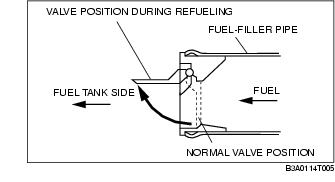

Nonreturn valve construction/operation [ZY]
• A single valve type has been adopted.

• Installed on the fuel tank side of the fuel-filler pipe.
• Under normal conditions, this valve is closed as shown by the dotted line. When refueling, it opens to the position shown by the solid line due to the flow of fuel. When refueling is finished, the valve returns to the normal valve position due to spring force.